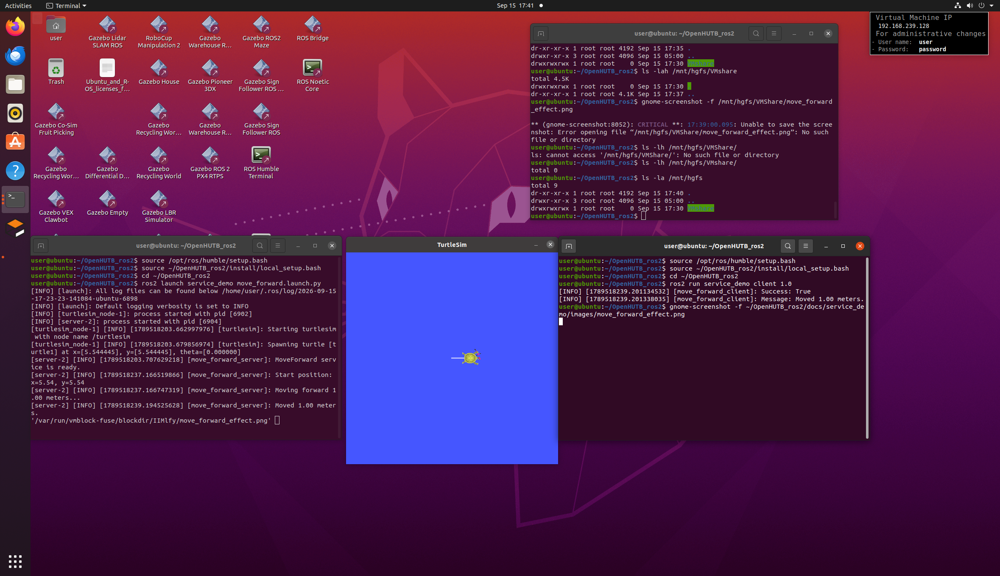

kk# ROS2 Service 控制小海龟移动
功能介绍
本示例使用 ROS2 Service 实现对 turtlesim 小海龟的距离控制。
客户端向 /move_forward 服务发送需要前进的距离，服务端收到请求后，通过发布 /turtle1/cmd_vel 控制小海龟运动，同时订阅 /turtle1/pose 获取小海龟当前位置。
当小海龟实际移动距离达到目标距离后，服务端停止运动，并向客户端返回执行结果。
系统结构
Service Client
|
| /move_forward
| distance
v
Service Server
|
| /turtle1/cmd_vel
v
turtlesim
|
| /turtle1/pose
v
Service Server
自定义 Service 接口
接口文件：
service_interfaces/srv/MoveForward.srv
float64 distance
---
bool success
string message
参数说明：
distance：请求小海龟移动的距离success：移动是否成功message：执行结果说明
实现特点
本示例不是简单按照固定时间控制小海龟移动，而是结合 /turtle1/pose 的位置反馈，根据实际移动距离判断是否达到目标距离。
因此，控制逻辑形成了：
发送目标距离
↓
Service Server 接收请求
↓
读取小海龟当前位置
↓
发布速度控制指令
↓
持续获取 /turtle1/pose
↓
计算实际移动距离
↓
达到目标距离
↓
停止小海龟
↓
返回 Service 执行结果
这种方式可以作为后续实现闭环控制、机器人运动控制等功能的基础。
运行环境
- Ubuntu 20.04.6 LTS
- ROS 2 Humble
- Python 3.8.10
- turtlesim
编译
在 ROS 2 工作空间中执行：
cd ~/ros2_ws
colcon build --packages-select service_interfaces service_demo
编译完成后：
source install/local_setup.bash
启动示例
启动 turtlesim 和 Service Server：
ros2 launch service_demo move_forward.launch.py
重新打开一个终端，并加载 ROS 2 环境：
source /opt/ros/humble/setup.bash
source ~/ros2_ws/install/local_setup.bash
发送移动请求，例如移动 1.0 个距离单位：
ros2 run service_demo client 1.0
也可以修改移动距离，例如：
ros2 run service_demo client 2.0
查看 Service 接口
执行：
ros2 interface show service_interfaces/srv/MoveForward
可以看到：
float64 distance
---
bool success
string message
运行效果
启动 turtlesim 后，通过 Service Client 发送移动距离，小海龟会按照请求的距离向当前朝向移动。
服务端会根据 /turtle1/pose 获取实际位置，并计算实际移动距离。
达到目标距离后，小海龟停止运动，客户端获得执行结果。

AI 使用声明
本项目开发过程中使用了 OpenAI GPT-5.6 Luna 作为 AI 辅助工具，用于代码结构分析、ROS 2 API 使用建议、问题排查和文档整理。
模型信息：https://openai.com/index/gpt-5-6/
最终代码由提交者自行修改、测试和验证。